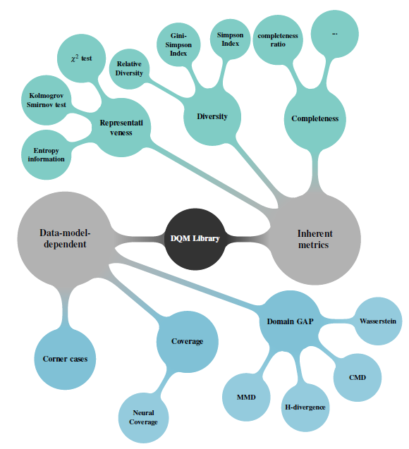

Welcome to DQM’s documentation
DQM

Data_Quality_Metrics
Data Quality Metrics called DQM is a python library which computes three data inherent metrics and one data-model dependent metrics.
The data inherent metrics are (defintions from Confiance.ai program):
Diversity : Computes the presence in the dataset of all required information defined in the specification (requirements, Operational Design Domain (ODD) … ).
Representativeness : is defined as the conformity of the distribution of the key characteristics of the dataset according to a specification (requirements, ODD.. . )
Completeness : is defiend by the degree to which subject data associated with an entity has values for all expected attributes and related entity instances in a specific context of use.
The data-model dependent metrics are (definition from Confiance. ai program):
Domain Gap : In the context of a computer vision task, the Domain Gap (DG) refers to the difference in semantic, textures and shapes between two distributions of images and it can lead to poor performances when a model is trained on a given distribution and then is applied to another one.
For each metric, several approaches are developped to handle the maximum of data types. For more technical and scientific details, you can refer back to this delivrable
Project description
Several approches are developped as decscribed in the figure below.
In the current version, the available metrics are:
Representativeness :
$\chi^2$ goodness of fit test for uniform and normal distibutions.
Kolmogorov Smirnov test for uniform and normal distributions.
Granular and Relative Theorithecal Entropy GRTE proposed and developed in Confiance.ai program.
Diversity :
Relative Diverity developed and implemented in Confiance.ai program
Gini-Simpson and Simposon indices.
Completeness :
Ratio of filled inofrmation
Domain Gap :
MMD
CMD
Wasserstein
H-Divergence
FID
Kullback-Leiblur MultiVariate Normal distribution
Documentation structure
To know how to get started with dqm, see the 💡 Guideline section.
If you want more informations about how to use implemented metrics see the corresponding sections: 🍎 Diversity. 🋠Domain gap. 📠Representativeness. 🊠Completeness.
References links
@inproceedings{chaouche2024dqm,
title={DQM: Data Quality Metrics for AI components in the industry},
author={Chaouche, Sabrina and Randon, Yoann and Adjed, Faouzi and Boudjani, Nadira and Khedher, Mohamed Ibn},
booktitle={Proceedings of the AAAI Symposium Series},
volume={4},
number={1},
pages={24--31},
year={2024}
}